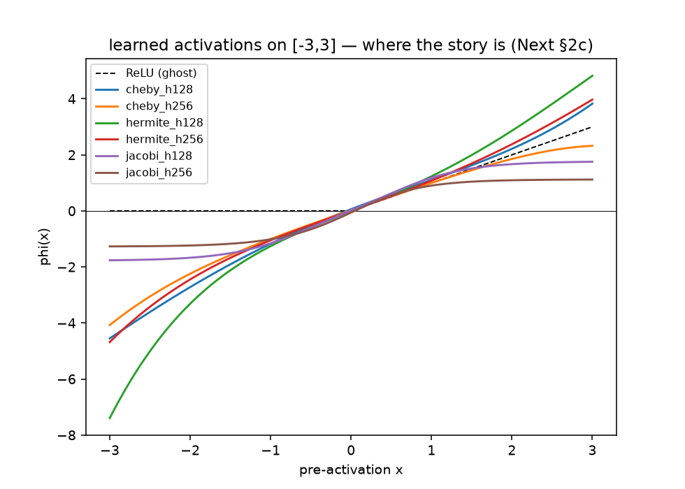
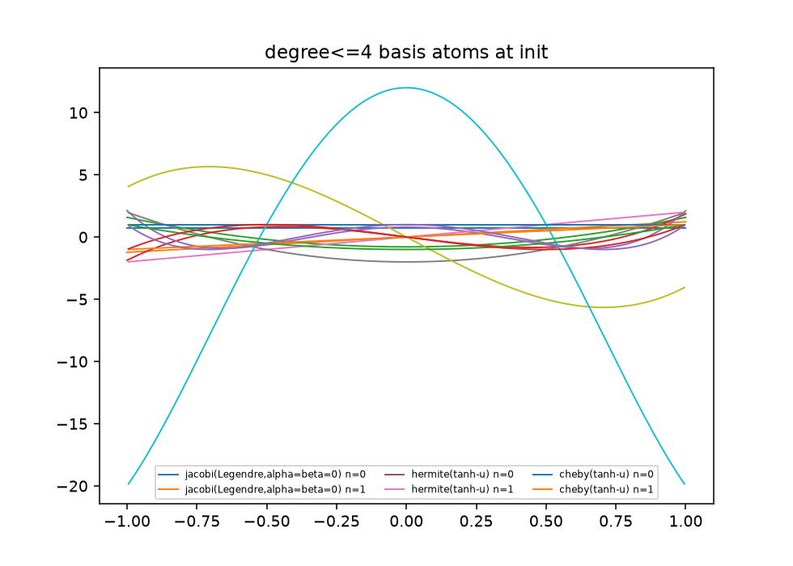
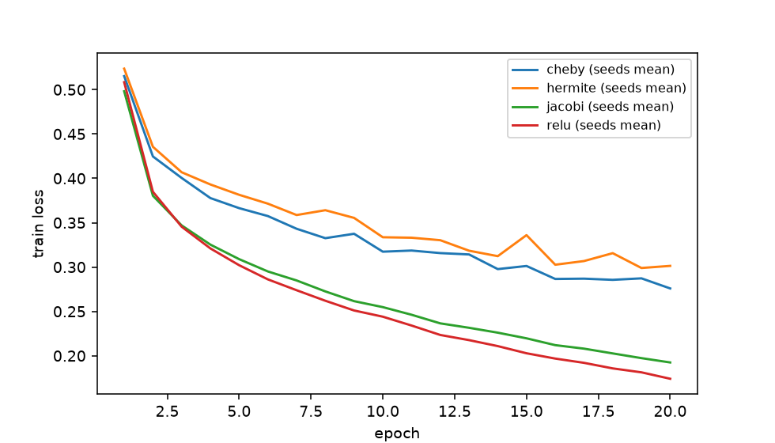

observed max within-arm seed sd = 0.469 pp > 0.15 pp ⇒ adopted band = 2·sd = ±0.938 pp, fixed before the remaining 20 runs.exp8: polynomial activations vs ReLU, pre-registered and settled
40 runs · 4 arms · 5 paired seeds · equal total parameters · band fixed before scoring
1 Protocol (frozen before epoch zero)
The full pre-registration lives in docs/PREREG.md, committed at PolyNN@a3adf21 — before any epoch ran — with an append-only amendment log (§7). In one paragraph: one hidden layer 784→h→10, widths {128, 256}, degree d = 4 (5 coefficients per neuron, billed as architecture), Adam lr 1e-3, batch 64, 20 epochs, final-epoch model, 5 paired seeds {{1000…1004}}, canonical Fashion-MNIST split pinned in data.py, bytes hash-pinned in the shared chora manifest. The comparison is equal total parameters: poly arms cost \(800h+12\), the ReLU arm is width-matched to within 1% (same \(h\) is 0.63% off).
Arms: A-jacobi \(\phi(x)=\sum_k c_k\hat P_k^{(\alpha,\beta)}(\tanh x)\) with per-neuron \(c_k\) and per-layer learned \((\alpha,\beta)\) (softplus-admissible, Legendre init); A-hermite \(\sum_k c_k H_k(x)\) and A-cheby \(\sum_k c_k T_k(x)\) raw — no squashing, no normalization rescue: if they explode, that is the result. The Jacobi recurrence is ported from JacobiGP@f181923:src/jacobigp/basis.py (blob 597d1fea…) and verified against scipy.special (10/10 tests: scipy-equality, Gram \(=\mathbb{I}\) on five \((\alpha,\beta)\) including the Chebyshev pole line, finite \(\partial/\partial\alpha\)).
1.1 The noise band
Calibration ran first: 20 of the 40 cells, after which the claim band was fixed — the provisional ±0.3 pp rule died exactly as designed:
2 The matrix
Every recorded cell, no drops. Test accuracy %, 5 seeds; A/B letters per pre-registered prediction below.
2.0.0.1 h = 128
| arm | test acc % | sd | total params | learned α / β | s / epoch | diverged |
|---|---|---|---|---|---|---|
| A-relu | 87.99 | 0.33 | 101,770 | — | 2.3 | 0 |
| A-jacobi | 87.21 | 0.47 | 102,412 | 0.36 / 0.36 | 6.1 | 0 |
| A-hermite | 86.07 | 0.65 | 102,410 | — | 3.6 | 0 |
| A-cheby | 85.80 | 0.65 | 102,410 | — | 3.3 | 0 |
2.0.0.2 h = 256
| arm | test acc % | sd | total params | learned α / β | s / epoch | diverged |
|---|---|---|---|---|---|---|
| A-relu | 88.16 | 0.28 | 203,530 | — | 2.3 | 0 |
| A-jacobi | 87.52 | 0.15 | 204,812 | 0.26 / 0.28 | 6.2 | 0 |
| A-hermite | 85.78 | 1.00 | 204,810 | — | 3.3 | 0 |
| A-cheby | 86.13 | 0.65 | 204,810 | — | 3.2 | 0 |
3 Verdicts against the predictions
3.1 P-shape: the load-bearing half holds
Jacobi ≥ Hermite by +1.15 pp (h=128) and +1.75 pp (h=256) — both beyond the ±0.938 pp band, at both widths, never averaged across widths to rescue. The family with built-in boundaries, on the domain that matches a bounded activation, wins per parameter. JacobiGP, your prediction survives its first test.
NoteHermite vs Cheby: indistinguishable, and we say so
+0.27 pp at h=128, −0.35 pp at h=256 — inside the band at both widths. Neither claimed nor killed; Hermite’s 1.00 pp seed sd at h=256 is the largest variance in the table: raw arms don’t explode to NaN, they explode to noise (\(|\phi|\) reaches 150–230 on \([-5,5]\) after training).
WarningP-eff: killed — by us, exactly as pre-registered
A total-parameter-matched ReLU matches or beats every poly arm at both widths (gaps 0.64–2.19 pp). “50–70% fewer parameters at equal accuracy” is retired at d=4 on a 10⁵-parameter MLP: bandlimiting is not free; the smoothness the container buys costs more than the kink it removes. First-class negative result.
4 What the shape knob learned

\((\alpha,\beta)\) started at Legendre \((0,0)\) and walked to ≈ (0.40, 0.37) in every seed — a positive-\((\alpha,\beta)\) preference: the Jacobi weight \((1-x)^\alpha(1+x)^\beta\) vanishing at the edges of the squashed domain. The neuron spends its boundary flexibility exactly where \(\tanh\) already saturates — Exp 1’s edge behavior, interiorized, and the cleanest echo across benches the programme could ask for: the GP’s evidence optimizer and per-neuron coefficients, two scales apart, dislike the same edges.

5 The spectral row, GPU-free (P-relu-tail)
How non-bandlimited is ReLU? Best degree-\(d\) polynomial approximation of ReLU on \([-3,3]\), relative error, vs the classical \(\sim 0.28/d\) asymptotics:
| d | rel. error | 0.28/d | ratio |
|---|---|---|---|
| 2 | 0.094 | 0.140 | 0.670 |
| 4 | 0.059 | 0.070 | 0.837 |
| 6 | 0.043 | 0.047 | 0.916 |
| 8 | 0.034 | 0.035 | 0.961 |
| 12 | 0.024 | 0.023 | 1.013 |
| 16 | 0.018 | 0.018 | 1.041 |
The ratio walks to 1.0: confirmed. At d=4 ReLU leaves 5.9% of its range uncaptured by any degree-4 polynomial — that is the tail our arms pay to remove, and this note’s tables price that removal at 0.6–2.2 pp of accuracy.

6 Compute, measured not feared
Whole 40-cell matrix on the shared M1 Pro (MPS): ≈ 85 min. Letter 004’s “under an hour” missed by 1.5×, and the estimate now carries an error bar — mean per-epoch wall-clock across all 40 runs:
<p><b>3.78 s / epoch</b> — still the programme's cheapest bench.</p>7 Reproduce
python -m unittest tests.test_basis -v # the port, verified against scipy
python train.py --arm jacobi --hidden 128 --seed 1000 --epochs 20 # one cell
python compare.py --calibration # band fixed before scoring
python compare.py --phase remaining && python compare.py --report
python visualize.py # figures + relu_tail rowAnchors: protocol PolyNN@a3adf21 · code PolyNN@33afdb8 · results PolyNN@548855e · shared bytes in chora manifests (artifacts/results/polynn/exp8_summary.json b3eaccf6e366…, noise_band.json e685bce134ce…, relu_tail.json eaa03a2d09a2…). Correspondence: Letters 004 → 005 → 006 in docs/LETTERS/.